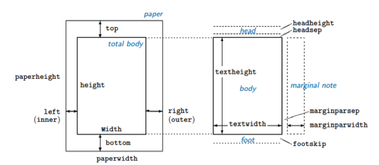

37 Tips & Tricks
This section covers some useful tips & tricks and extensions of the previously discussed functionalities of LaTeX.
37.1 Page Dimensions
The package geometry provides an interface to change global parameters of the document and adjust various page dimensions. This can be done by either loading the package using \usepackage{geometry} and then by using the command \geometry{options} in the preamble of the document, or more concisely by specifying the options when loading the package, by \usepackage[options]{geometry} – these are equivalent and can be used interchangeably, although the majority of LaTeX users seem to prefer the latter since it’s shorter. The options are comma-separated parameters that you may want to adjust, such as the paper size (a4paper, a3paper, legalpaper, etc.), textwidth and textheight (which are self-explanatory) or margin (which sets all the margins to a certain length).
\documentclass{article}
\usepackage{lipsum}
\usepackage[a4paper, margin = 2in]{geometry}
\begin{document}
\lipsum[10-15]
\end{document}\documentclass{article}
\usepackage{lipsum}
\usepackage{geometry}
\geometry{a4paper, margin = 2in}
\begin{document}
\lipsum[10-15]
\end{document}These two are equivalent.
The list of some basic parameters is shown in Table 37.1. Each of them can be set using different LaTeX length units such as cm or in. The total size of the page is divided into the text body and margins, which have separate parameters – this is shown in Figure adopted from the geometry package documentation, which discusses the intricacies of different parameters at length.
| Parameter | Description |
|---|---|
| textwidth and textheight | Width/height of the body |
| width and height | By default, the same as textwidth and textheight. If includehead = true, includefoot = true or includemp = true, they include header, footer and margin sizes respectively. |
| top, bottom, left, right | Size of specific margins |
| margin | Size of all margins |
| headheight | Height of the header |
| footsep | Spacing between the top of the footnote and the bottom of the text |
| footskip | Distance between the bottom of the text and the bottom of the footnote \ |

You can also change page dimensions mid-document, using the \newgeometry{options} command in your document with the options listed above. Then, using \restoregeometry will restore the parameters of all pages set after \newpage or \clearpage to those set in the preamble. This is demonstrated in the example.
37.2 Styling
37.2.1 Page number
\pagenumbering{style} – determines numbering style from the page it’s used on. Note that whenever you use this command, the page numbering starts from the beginning. Styles that can be used include arabic, alph (lowercase letters), Alph (uppercase), roman (lowercase roman numerals), Roman (uppercase roman numerals).
37.3 Shortcuts and Special Escapes
37.3.1 Shortcuts
Texstudio also comes with multiple keyboard shortcuts which make preparing documents in LaTeX slightly faster. Some of the most useful shortcuts are listed in Table 37.2.
| Shortcut | Description |
|---|---|
| Ctrl/cmd + I | Italics, i.e. \(\backslash\)textit |
| Ctrl/cmd + B | Bold, i.e. \(\backslash\)textbf |
| Ctrl/cmd + Return | Newline \(\backslash\)\(\backslash\) |
| Ctrl/cmd + Shift + I | New \(\backslash\)item in itemize environment |
| Ctrl/cmd + E | New empty environmnent |
37.3.2 Special Escapes
Some of the characters such as “$”, “%”, “#” or “_” have a special meaning in LaTeX and by default are interpreted as elements of the syntax, rather than the text. You can override it by using the “escape” signs, which is the backslash “\”. So, for example, if you want to compile “15%”, you need to typeset “15\%” to escape the percentage character. To escape the backslash itself, use the tag \textbackslash.